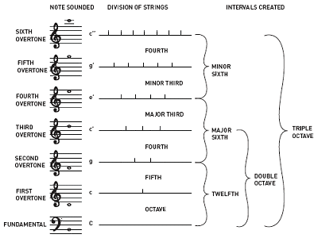
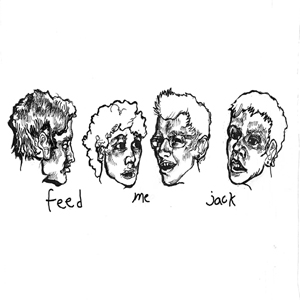
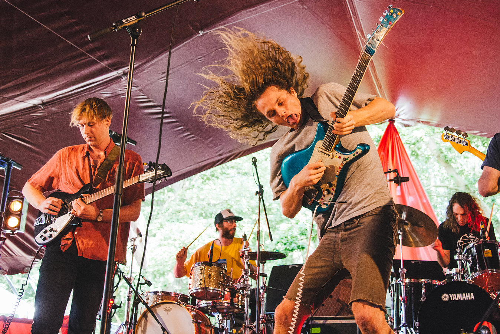

Track list:
I wanted to make a tape with good flow from track to track, exploring a few different genres and showcasing some lesser known artists and bands. I mixed together some older tracks which have nostalgic value to me as well as some newer stuff that I've been enjoying.
I liked the idea of telling a story starting at the origins of Western music and leading into the current day. This mix didn't quite realize that, but I think it's a cool effect to start off with a Renaissance-age Mass leading directly into some 1970s blues/soul. The transition is actually quite seamless and it really goes to show how intact the foundations of Western music have remained over time.
I'm usually not a big fan of the singer-songwriter type, but there's something special about this dude.
This song is the ultimate chill out, so good.
Another light song, this concludes the opening "suite" of hymns and blues.
Band based in next-door Oakland. These guys are my absolute favorites. Dynamic, grooving music with great melodies, interesting mathy rhythms that keep you on your toes, and a touch of jazz-influenced textures and harmonies - you can't ask for more than that.
First heard this song in a WoW PvP video when I was like 12. Good times.
Needed a breather with a strummin' acoustic guitar to lead into the finale. Smiley Smile is actually the only Beach Boys album I've listened to, but I think it's brilliant.
These guys are absolute lunatics coming out of the Melbourne indie music scene. They're outfitted with 4 guitars (1 bass), a harmonica, and 2 drummers. How to listen: close your eyes, listen to the drums throb on 4/4 eighth notes in sync, and move your head up and down really fast.
